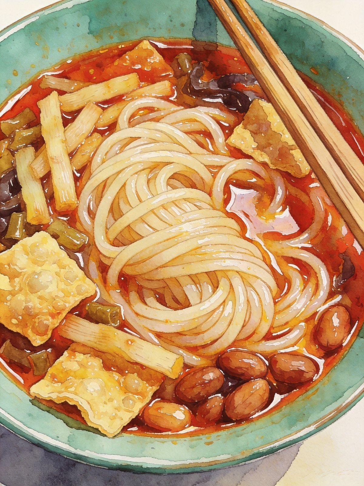
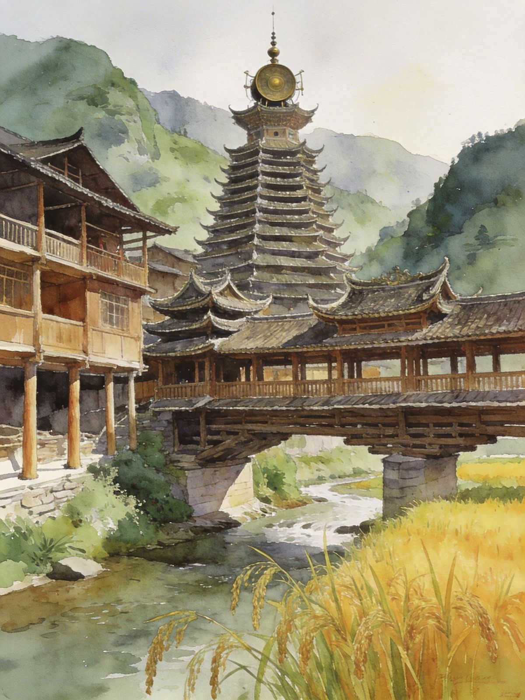

封面
总览
行前·交通·住
柳江+龙潭 · Day1
螺蛳粉 · Day2
三江侗寨 · Day3
柳江夜景
美食清单
三江·程阳
避坑提示
LIUZHOU · LONG CITY
柳州·龙城
螺蛳粉故乡 · 百里柳江 · 三江侗寨
螺蛳粉
百里柳江
窑埠古镇
程阳风雨桥
三江侗寨
广西 · 柳州
A5 口袋手册
· 2-3天
1
/ 10
柳江龙城
动线总览
2–3 天怎么玩
Route Overview
2天
精华
柳江 + 龙潭 + 螺蛳粉
市区一日 + 地道粉食打卡
3天
深度
+ 三江侗寨 · 程阳风雨桥
侗族风情，需单列一日
TIP
柳州是广西工业重镇，却有
「百里柳江、百里画廊」
的柔美；一碗
螺蛳粉
让柳州火遍全国。
蟠龙山、窑埠古镇夜游
，再到
三江程阳风雨桥
感受侗族风情。
TIP
三江侗寨位于桂北山区，离市区约
2h 车程
，需单列一日。螺蛳粉辣度可自选。
2
/ 10
柳江龙城
行前准备
出发前，记住
3 件事
Before You Go
🚄 怎么去
高铁
：柳州站通达全国，南宁/桂林/北海转乘便利
去三江
：动车约1h，或自驾约2h
市区
柳江环绕
，公交+打车；江景步道/游船体验柳江
📅 最佳季节
春季3–5月
花木繁盛、气温宜人
秋季9–11月
天高气爽，看江最佳
🏨 住哪
近江景夜市选
城中区/窑埠古镇
交通方便选
柳北区
（近柳州北站）
TIP
螺蛳粉原产地吃最地道
，辣度可自选；江景夜游提前查开船时间。
3
/ 10
柳江龙城
Day1 · 柳江 + 龙潭
Day1 · 全天
绿柳江畔 · 龙潭喀斯特
龙潭公园
→
蟠龙山
→
柳侯祠
→
窑埠古镇夜游
🌳 龙潭公园
喀斯特园林+镜湖
，市区绿肺
适合上午慢慢逛，山水倒影拍出来很出片
🏯 蟠龙+柳侯
蟠龙山公园、柳侯祠
，江边步道散步
傍晚沿江步道看「三面柳江绕城」
TIP
晚上到
窑埠古镇
逛灯夜市 +
柳江夜游
看跨江桥景（文惠桥/柳江大桥），华灯初上时江景最佳。
柳江夜色

窑埠夜市
4
/ 10
柳江龙城
Day2 · 螺蛳粉
Day2 · 美食日
螺蛳粉故乡
老牌螺蛳粉店
→
柳州工业博物馆
→
返程
🍜 地道螺蛳粉
酸辣鲜爽
，汤底用螺蛳+猪骨熬制
加料：腐竹、酸笋、花生、青菜、辣油
深巷
老字号
多，本地人常排队
🏭 工业博物馆
柳州是
工业名城
，博物馆记录城市双面
吃完粉可顺路一逛，午后轻松
TIP
螺蛳粉
辣度自选
：微辣/中辣/加辣；
酸笋是精华
，怕冲味可少放。另有螺蛳鸭脚煲、螺蛳粉火锅、糖水、五色糯米饭。
地道螺蛳粉
5
/ 10
柳江龙城
Day3 · 三江侗寨
3日 · 深度
程阳风雨桥 · 侗族风情
动车/自驾赴三江
→
程阳风雨桥
→
侗寨鼓楼
→
百家宴
🌉 程阳八寨
程阳风雨桥
是世界廊桥建筑杰作、侗族核心地标
侗寨鼓楼
是侗族村寨中心，木构精美
百家宴
是侗族待客大餐，体验原汁民俗
🗺 顺游
丹洲古镇
为江心岛古镇，可顺游
早起看晨寨，山里云雾缭绕
TIP
三江为
少数民族聚居区
，尊重当地民俗；山区天气多变，备薄外套。预留整天往返更从容。

程阳风雨桥
侗寨村落
6
/ 10
柳江龙城
柳江夜景
百里柳江
· 百里画廊
Night Cruise
🚢 柳江夜游
乘船看两岸
高楼灯光与跨江大桥
（文惠桥/柳江大桥）
华灯初上时江景最美，凉爽惬意
⛰ 登高观江
蟠龙山/马鞍山
登高看「三面柳江绕城」全景
视野开阔，夜景尽收眼底
🏮 窑埠古镇
仿古街区+灯光夜市，晚餐后散步
周末节假日更热闹
TIP
江景最佳在
傍晚-入夜
；夜游提前查开船时间，旺季预留排队。
7
/ 10
柳江龙城
美食清单
柳州味道
· 螺蛳与酸辣
Eat · Local
TIP
螺蛳粉是柳州
头号美食
，汤底用螺蛳+猪骨熬制；「闻臭吃香」的酸笋是精华。
🍜
螺蛳粉
酸辣鲜爽，加腐竹/酸笋/辣油
🍲
螺蛳鸭脚煲 / 火锅
一锅入魂，冬日暖胃
🥢
柳州糖水 / 五色糯米饭
饭后甜点与主食
TIP
深巷
老字号
多，本地人常排队；辣度微辣/中辣/加辣自选。
柳州工业博物馆
记录城市双面，可顺路。
8
/ 10
柳江龙城
三江 · 程阳八寨
侗乡
· 风雨桥与鼓楼
Dong Villages
🌉 程阳风雨桥
世界廊桥建筑杰作，
侗族核心地标
木构廊桥横跨溪流，桥上有亭有阁
🛖 侗寨鼓楼
木构鼓楼是
侗族村寨中心
，精美壮观
百家宴：侗族待客大餐，体验原汁民俗
🗺 丹洲古镇
江心岛古镇，可顺游
侗寨民俗活动有特定日子，可提前咨询
TIP
尊重当地民俗；山区天气多变
备薄外套
。三江较远，别压缩到半天赶回。
程阳风雨桥
9
/ 10
柳江龙城
避坑提示
看清这些，玩得更安心
Stay Safe
🍜
螺蛳粉误区
汤底含螺蛳味但并非真有螺肉，想鲜可加炒螺
🛖
三江较远
别压缩到半天赶回，会体验不佳；预留整天
☀️
夏季湿热
午后避免暴晒安排，多补水
🚢
夜游订票
提前查开船时间，旺季预留排队
⚠️
紧急
紧急拨 110 / 120；消费纠纷拨 12345
柳州龙城「WorldStip」祝你玩得开心 🍜
10
/ 10
WorldStip · 柳州 · 百里柳江 / 螺蛳粉 / 窑埠古镇 / 程阳风雨桥 / 三江侗寨 · 数据以景区当日公示为准
Insta360
记录美好
记录美好生活
相机指南 · CAMERA GUIDE